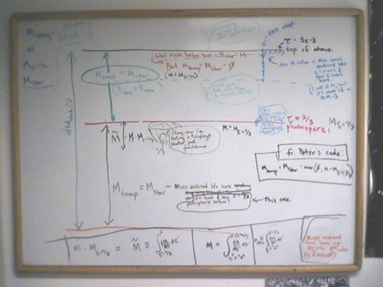
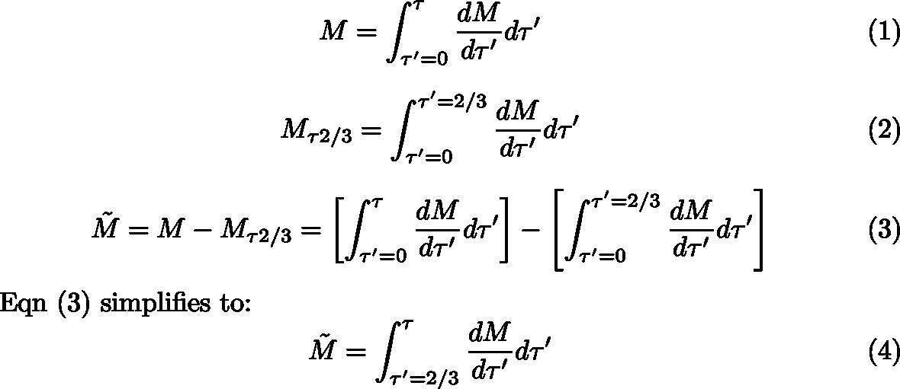
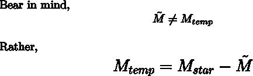
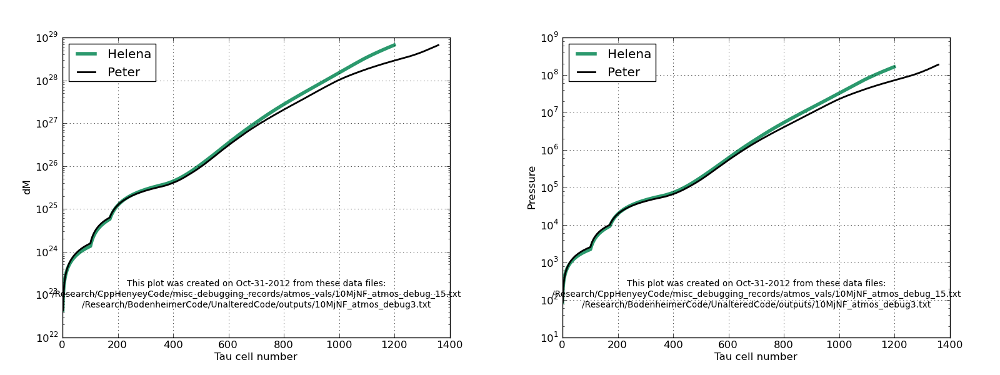

Date & Time: Oct. 29, 2012
Location: campus
Computing context: MachoMac
(/Desktop/Research/CppHenyeyCode/src, /Desktop/Research/BodenheimerCode/UnalteredCode)
From last time:

A
snapshot of the cartoon I drew on the whiteboard to help me figure
out precisely what the effective mass is at different depths in the
atmosphere according to the RK4 proceedure (which is personified as
the stick figure falling through the various parts of the
atmosphere).
The snapshot of my whiteboard (above) isn't the clearest, but the take-home point from all that board work is:
the effective mass (Mtemp) being "felt" by the RK4 difference equations is that M-twiddle quantity.
M-twiddle = [total mass enclosed from the top of the atmosphere to wherever depth you're at now] - [amount of mass enclosed b/w the top of the atmosphere and the tau=2/3 surface]. In cleaner notation, that looks like:

Looking at Eqn (4), it's clear that the M-twiddle variable signifies the amount of mass contained between the photosphere and whatever depth you're at below it. If you're still above the photosphere, you 'pretend' M-twiddle = 0, even though it doesn't. (I really need to clarify to myself once and for all why that's a reasonable approximation to make. And then commit it to writing, here, so that I don't have to keep re-proving it to myself.)

To Do Today:
Update
my atmos code with the addition of an M-twiddle variable (and an
R-twiddle variable too, I guess), and use if-then statements to
incorporate those new variables in the Mtemp and Rtemp calculations
in a more straightforward way, rather than (failing at) following
the trick Peter used in his code.
Done. But it didn't fix anything (see Figure 2 for the results that most clearly show this).

Figure
2
The mass and pressure values from Helena get too large too soon, while the radius and temperature values from Helena remain too small.
Talked to Greg about this. Based on what he said, the debugging plan is:
Have Helena take in the (M,R,P,T,kappa,rho,nab) values from Peter's code at each step, and have Helena calculate the RHSs of the 4 ODEs and compare them to what Peter's code gets from those same inputs. This step is to verify that the RHSs of the ODEs in Helena are correct.
Read in the
atmos profile produced by Peter's code to python.
Have python
print out each of the (tau,M,R,P,T) values at each step to its own
individual file.
Read each of
those files into Helena's atmos subroutine, and have it calculate
the atmos profile from those.
Record the difference b/w what Helena calculates and what Peter gets at each step, and plot/compare that.
Got to all but the step above. I forgot to have python put newlines b/w entries when writing the arrays to file. So, will need to start tomorrow redoing that step (and all the ones that follow it).
If that works, then have Helena do an adaptive tau-step size algorithm (step size halving --> results after 2 steps should be the same as result after 1 step with the larger dTau value)
"Something subtly wrong with my RK4 method... maybe not using an updated value in one of the steps..."
Notes on progress/ideas/to-do for the Amazon Web Service elastic computing thing:
The issues I'm currently trying to sort out w/ Hadoop are as follows:
1) Hadoop, by itself, Only takes map and reduce functions written in Java. However, Java is Hard. Also, more importantly, most scientific codes are *not* written in Java, or in *any* scripting language for that matter. So, how to get Hadoop to use one of those codes as its 'map' function?
2) you can start to get around that problem by using Hadoop streaming, which takes *any* executable programs in the "map" and "reduce" Slots . So, if you have program.cpp that Compiles to the executable myProgram, you could specify myProgram as your "map" function.
However, this still requires that ALL the inputs to myProgram come from the command line. In the case of Helena, and many other Scientific computing codes, the program needs to read in MUCH more than just a few parameter values in order to do its task. For instance, Helena needs to read in an entire file of data to start its initial model . In addition, it needs to read in several files containing the E0S look-up table values. So, the question is: --> How do you pass along the input files that your executable needs w/ the function call to myProgram? (I've Seen some mention of zipping up the external files & passing that single .gz file along w/ the Hadoop map - reduce call, but I'm not entirely sure how that works, Or whether passing copies of all those extra files, zipped or not, will end up making the process too Computationally or memoy-usage-ly intensive.
2.5) scientific programs usually create entire files of output (sometimes several per individual Simulation run). Is it possible to pass those *files* as inputs to the "reduce" function? Does a single processor handle all of the outputs from a Single map shard process? Or is there no way of knowing which Set of input data generated any of the items reduce is acting on? This is important to figure Out, b/c your simulation results mean NOTHING if you don't know what inputs to use to reproduce them.
3) For right how, I don't think We need to worry about supplying a " reduce " function that does anything. In the future, you might see whether the reduce fuction is the appropriate place to do basic data parsing and analysis. Grouping results by keyword value pairs - which is how the reduce function basically works, may make figuring out how to translate my analysis Scripts to "reduce" - functional form kind of tricky.
4) In order to start testing any of this stuff out, I need to be able to RUN Hadoop on some machine.
A) First, need to be able to run Hadoop Locally, as a single - node cluster on my own machine.
B) If there is some way of getting my single, local machine to impersonate a cluster of multiple nodes, have it do that (BUT HOW?!) and run the Hadoop map - reduce process locally.
C) Once I can get this working and debugged on my local machine, where computing time is free, try getting it to work on the Amazon cloud servers. ( It sucks that their EMR framework doesn't let you use the free micro - instances to form your virtual cluster, b/c I just know I'm going to end up burning thru a lot of non - free computing hours on there, which are coming out of my own rather shallow grad student pockets for the time being )